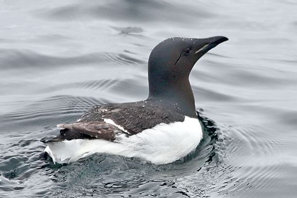

| These photographs accompany records that have been recently submitted to the committee. This record
has been ACCEPTED.  Thick-billed Murre Uria lomvia 16 May 2010, 4-8 nm west of Noyo Harbor., MEN 2010-043 © 2010 Richard Hubacek Back to CBRC Rare Bird Photos |